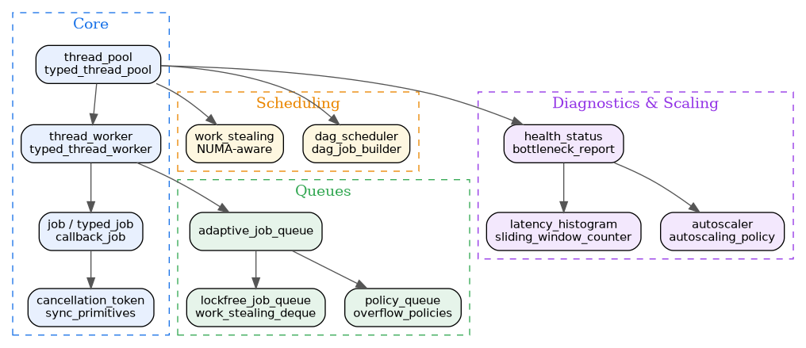

- Generated by
 1.12.0
1.12.0
|
Thread System 0.3.1
High-performance C++20 thread pool with work stealing and DAG scheduling
|
Thread System is a comprehensive, modern C++20 multithreading framework designed to democratize concurrent programming. By providing intuitive abstractions and robust implementations, it empowers developers of all skill levels to build high-performance, thread-safe applications without the typical complexity and pitfalls of manual thread management.
As a Tier 1 Core Services library in the kcenon ecosystem, Thread System depends only on common_system (Tier 0) and provides the concurrency foundation for logger_system, monitoring_system, network_system, and database_system.
Key goals:
| Category | Feature | Description |
|---|---|---|
| Core | Thread Pool | Multi-worker pool with adaptive queue and submit_task API |
| Core | Typed Thread Pool | Priority-based scheduling with job type routing and aging |
| Queue | Adaptive Job Queue | Auto-switches between mutex and lock-free modes |
| Queue | Policy Queue | Configurable sync, overflow, and bounded policies |
| Lock-free | Lock-free Job Queue | Michael-Scott algorithm with hazard pointer reclamation |
| Lock-free | Work Stealing Deque | Chase-Lev deque for work stealing schedulers |
| Scheduling | DAG Scheduler | Dependency graph-based job execution with dag_job_builder |
| Scheduling | Work Stealing | NUMA-aware work stealing across thread pools |
| Scaling | Autoscaler | Dynamic thread pool sizing based on load metrics |
| Diagnostics | Health Status | Thread pool health monitoring and bottleneck detection |
| Metrics | Latency Histogram | Per-job latency tracking with sliding window counters |
| Safety | Cancellation Token | Cooperative cancellation with hierarchy support |
| Safety | Hazard Pointers | Thread-local hazard arrays for lock-free memory reclamation |
The library is organized into layers. Higher layers depend on lower layers, but never the reverse.

Create a thread pool and submit jobs in a few lines:
| Module | Directory | Key Headers | Description |
|---|---|---|---|
| Core | core/ | thread_pool.h, thread_worker.h, job.h, job_queue.h | Thread pool, workers, jobs, cancellation, hazard pointers, sync primitives |
| Queue | queue/ | adaptive_job_queue.h, queue_factory.h | Adaptive job queue (auto mutex/lockfree) and factory |
| Lock-free | lockfree/ | lockfree_job_queue.h, work_stealing_deque.h | Michael-Scott queue, Chase-Lev deque |
| DAG | dag/ | dag_scheduler.h, dag_job.h, dag_config.h | Dependency graph-based job scheduling |
| Stealing | stealing/ | work_stealing_pool.h, numa_topology.h | NUMA-aware work stealing scheduler |
| Scaling | scaling/ | autoscaler.h, autoscaling_policy.h | Dynamic thread pool sizing |
| Diagnostics | diagnostics/ | thread_pool_diagnostics.h, health_status.h | Health monitoring, bottleneck reporting |
| Metrics | metrics/ | enhanced_metrics.h, latency_histogram.h | Latency histograms, sliding window counters |
| Policies | policies/ | sync_policies.h, overflow_policies.h | Sync and overflow policy abstractions |
| Pool Policies | pool_policies/ | autoscaling.h, circuit_breaker.h, work_stealing.h | Pool-level behavioral policies |
| Adapters | adapters/ | common_executor_adapter.h, job_queue_adapter.h | Bridges to common_system IExecutor |
| Concepts | concepts/ | thread_concepts.h | C++20 concepts for thread domain |
New to Thread System? Start here. These pages walk through the most common integration scenarios and answer the questions developers ask most often.
| Resource | Description |
|---|---|
| Tutorial: Thread Pool | Choosing between basic and typed pools, work-stealing, sizing |
| Tutorial: DAG Scheduling | Defining task dependencies, execution order, error handling |
| Tutorial: Lock-Free Queue Patterns | MPMC vs SPSC selection, hazard pointers, performance |
| Frequently Asked Questions | Quick answers to the 10 most common integration questions |
| Troubleshooting Guide | Diagnosing deadlocks, leaks, hangs, and performance issues |
| Example | Source | Description |
|---|---|---|
| Thread Pool | thread_pool_sample | Basic thread pool creation and job submission |
| Typed Thread Pool | typed_thread_pool_sample | Priority-based scheduling with job types |
| Typed Thread Pool 2 | typed_thread_pool_sample_2 | Advanced typed pool patterns |
| Typed Job Queue | typed_job_queue_sample | Type-aware job queue operations |
| Job Cancellation | job_cancellation_example | Cooperative task cancellation |
| Adaptive Queue | adaptive_queue_sample | Auto-switching mutex/lockfree queue |
| Hazard Pointer | hazard_pointer_sample | Lock-free memory reclamation |
| MPMC Queue | mpmc_queue_sample | Multi-producer multi-consumer queue |
| Queue Factory | queue_factory_sample | Queue creation via factory |
| Queue Capabilities | queue_capabilities_sample | Query and compare queue features |
| Node Pool | node_pool_sample | Pooled node allocation |
| Crash Protection | crash_protection | Fault-tolerant job execution |
| Config Example | config_example | Thread pool configuration |
| Composition | composition_example | Composing thread pools and queues |
| Integration | integration_example | Multi-component integration |
| Minimal Pool | minimal_thread_pool | Minimal thread pool setup |
| Service Registry | service_registry_sample | DI-based thread pool registration |
| Logger Sample | logger_sample | Async logging with thread pool |
Thread System is a Tier 1 Core Services library in the kcenon ecosystem. It depends on common_system and provides concurrency for higher-tier systems:
| System | Tier | Relationship | Repository |
|---|---|---|---|
| common_system | 0 | Dependency (IExecutor, Result<T>) | https://github.com/kcenon/common_system |
| logger_system | 2 | Downstream (async logging) | https://github.com/kcenon/logger_system |
| monitoring_system | 3 | Downstream (concurrent monitoring) | https://github.com/kcenon/monitoring_system |
| network_system | 4 | Downstream (concurrent I/O) | https://github.com/kcenon/network_system |
| database_system | 3 | Downstream (async queries) | https://github.com/kcenon/database_system |